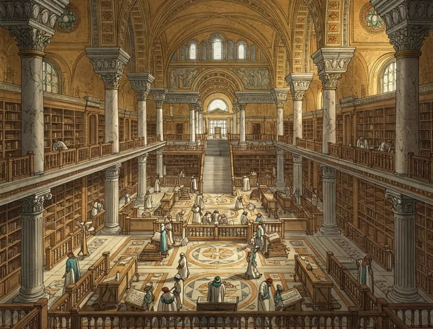
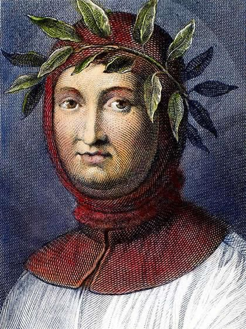
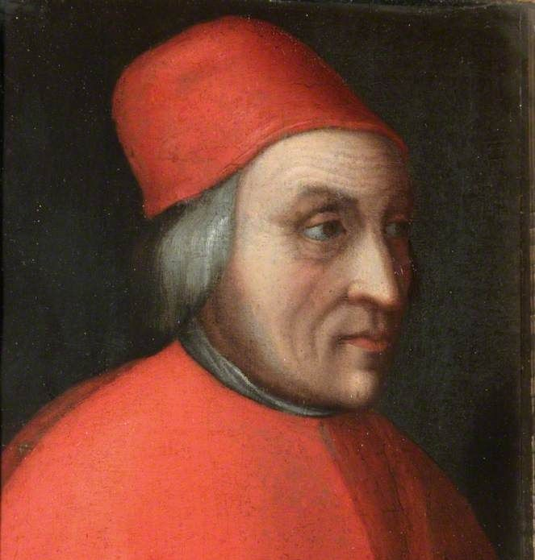

A pivot away from centuries of theology-centered thought toward human
potential, classical revival, and a strikingly candid new vision of
political power.
Introduction
The Renaissance was a broad intellectual and cultural transformation
that emerged in late medieval Italy and gradually spread across Europe,
drawing renewed energy from the literary, artistic, and philosophical
heritage of ancient Greece and Rome. Renaissance philosophy did not
simply abandon the Middle Ages or reject Christianity. Instead, it
challenged the dominance of certain Scholastic methods by returning
ad fontes — "to the sources" — through the direct study of
classical texts in their original languages wherever possible. This
renewed engagement with antiquity brought ethics, rhetoric, history,
politics, education, and the nature of human life into sharper
philosophical focus.
Where much medieval philosophy had developed within university
traditions centered on logic, metaphysics, and the relationship between
faith and reason, Renaissance thinkers increasingly emphasized the
practical and historical dimensions of human existence. They asked how
individuals should live, how citizens should participate in public life,
how education could cultivate virtue, and how political communities
actually acquire and exercise power. The resulting movement, known as
Renaissance Humanism, placed particular importance on
language, historical understanding, moral character, and the study of
classical literature.
This page traces that transformation across three broad chapters: the
rise of Humanism as an intellectual and educational
movement, the recovery and reinterpretation of the classical world that
expanded Europe's philosophical horizons, and the emergence of
strikingly innovative political thought in the works of writers such as
Niccolò Machiavelli and Thomas More. Together, these developments helped
create a bridge between medieval intellectual traditions and the
philosophical revolutions of the early modern world.
Renaissance philosophy therefore cannot be reduced to a single doctrine
or school. It included Christian Humanists, Platonists, Aristotelians,
skeptics, natural philosophers, political theorists, and reformers whose
disagreements were often as important as their shared admiration for
antiquity. What united many of them was a new confidence in the value of
historical scholarship and a conviction that inherited authorities
should be examined through texts, languages, evidence, and critical
argument rather than accepted without question.
Timeline at a Glance
1304–1374
Life of Francesco Petrarch, a pioneering Italian scholar and poet
whose search for classical manuscripts helped establish the
foundations of Renaissance Humanism.
1453
Fall of Constantinople — the movement of Byzantine scholars and
Greek manuscripts to the Latin West accelerates an exchange of
learning that had already begun before the city's fall.
c. 1450
Movable-type printing develops in Europe, dramatically increasing
the reproduction, circulation, and accessibility of classical and
contemporary texts.
1469–1527
Life of Niccolò Machiavelli, whose The Prince and
Discourses on Livy became foundational works of modern
political philosophy.
1478–1535
Life of Thomas More, English Humanist and author of Utopia
(1516), a work that combined social criticism with an imagined
political society.
1517
The Protestant Reformation begins, reshaping European debates about
religious authority, education, politics, conscience, and the
interpretation of sacred texts.
🏺 Context & The Rise of Humanism

A Renaissance library or study, filled with newly recovered classical
texts.
The Renaissance emerged gradually from the intellectual and social world
of late medieval Europe, first taking particularly influential forms in
the Italian city-states. Its thinkers inherited a rich medieval
tradition rather than beginning from an intellectual vacuum, but many
became dissatisfied with the highly technical methods associated with
university Scholasticism. They turned instead toward the literary,
historical, and moral writings of Greece and Rome, believing that direct
engagement with ancient texts could offer powerful resources for
understanding human character, civic life, and the cultivation of
virtue.
This movement became known as Humanism, an educational
and intellectual program centered on the studia humanitatis:
grammar, rhetoric, poetry, history, and moral philosophy. Humanism did
not mean atheism or a rejection of religion in the modern sense. Many of
its leading representatives were deeply committed Christians. Its
distinctive feature was the belief that classical literature and careful
language could educate citizens, refine moral judgment, and prepare
individuals for active participation in society.
Several historical developments strengthened this revival of classical
learning. Humanist scholars such as Petrarch and Poggio Bracciolini had
already begun searching European libraries and monasteries for neglected
Latin manuscripts long before 1453. Greek learning was also reaching
Italy through diplomatic, commercial, and scholarly contact with the
Byzantine world. The fall of Constantinople nevertheless accelerated the
movement of Greek-speaking scholars and manuscripts westward, expanding
access to original Greek texts and encouraging new generations of
translators and philologists.
The development of printing in the fifteenth century transformed the
conditions under which knowledge circulated. Manuscripts that had once
been rare, expensive, and vulnerable to copying errors could
increasingly be reproduced in larger numbers. Classical authors,
biblical texts, scholarly commentaries, and new philosophical works
reached readers across a growing European network. Printing did not
create Humanism, but it greatly amplified the movement and helped turn
scholarly debates into international intellectual conversations.
Italy's network of wealthy and politically competitive cities —
including Florence, Venice, Milan, Rome, and Naples — provided another
important setting for Renaissance philosophy. Merchants, civic
governments, churches, universities, and powerful families supported
artists and scholars, while diplomatic rivalry encouraged close
attention to history and political strategy. In this urban environment,
philosophy increasingly addressed not only the salvation of the soul but
also education, citizenship, power, historical change, and the
possibilities of human achievement.
1️⃣ The Rise of Humanism
A New Focus on Human Affairs

Petrarch is often called the "Father of Humanism" for his pioneering
rediscovery and study of classical Latin texts.
Renaissance Humanism began not as a simple rejection of Christianity but
as a change in intellectual emphasis, method, and educational
priorities. Humanists believed that the careful study of literature,
history, rhetoric, and moral philosophy could help cultivate wise and
virtuous individuals. Rather than treating classical authors merely as
authorities to be fitted into an established philosophical system, they
sought to read them historically, compare manuscripts, recover their
original languages, and learn from their distinctive approaches to human
life and civic responsibility.
Francesco Petrarch (1304–1374), often called the "Father of Humanism,"
was one of the most influential pioneers of this approach. His
admiration for ancient Roman writers, especially Cicero, inspired him to
search for neglected manuscripts and to treat classical literature as a
living source of ethical and intellectual guidance. Petrarch also
developed a heightened sense of historical distance between antiquity
and his own age, imagining a cultural revival through renewed engagement
with the achievements of the ancient world.
Humanist education centered on the studia humanitatis —
grammar, rhetoric, poetry, history, and moral philosophy. These
disciplines differed in emphasis from the traditional Scholastic
curriculum because they focused more directly on language, historical
interpretation, persuasion, and practical moral judgment. Humanists
believed that eloquence was not merely ornamental: the ability to
express ideas clearly and persuasively could help individuals
participate responsibly in civic and political life.
The Humanist method also encouraged philology, the
careful study of language and texts. Scholars compared different
manuscript copies, investigated the meanings of ancient words, and
attempted to distinguish authentic works from later additions or errors.
This critical attention to sources had important philosophical
consequences because it weakened the assumption that inherited
interpretations should automatically be accepted. Understanding what an
author actually wrote became a scholarly problem in its own right.
Humanism gradually spread beyond Italy and took different forms in
France, Germany, England, the Low Countries, and Spain. Northern
Humanists such as Erasmus combined classical scholarship with projects
of Christian reform, demonstrating that the movement could deepen
religious concerns rather than simply secularize them. Across Europe,
Renaissance Humanism reshaped education and created a new intellectual
ideal: the broadly educated person capable of reading critically,
writing persuasively, judging historical evidence, and reflecting
seriously on the moral problems of human life.
2️⃣ Recovering the Classical World
Plato Returns to the West

Marsilio Ficino's translations made the complete works of Plato
available in Latin for the first time in centuries.
The Renaissance recovery of classical philosophy transformed the range
of ideas available to European thinkers. Medieval scholars had preserved
and developed major parts of the ancient inheritance, and Aristotle had
become central to university philosophy, especially after a wider body
of his works entered the Latin West through translations and
commentaries. Plato, by contrast, was less fully available in medieval
Latin Europe, making the growing access to Greek manuscripts and direct
translations especially significant for Renaissance intellectual life.
The movement of Greek scholars and manuscripts into Italy did not begin
suddenly in 1453, but the fall of Constantinople accelerated an already
active exchange between the Byzantine and Latin worlds. Humanists gained
greater access to Greek language instruction and to original texts whose
earlier transmission had sometimes depended on indirect translations.
This encouraged a broader commitment to reading ancient authors as
closely as possible to their original form and contributed to the
Renaissance ideal of returning ad fontes — back to the sources.
Marsilio Ficino (1433–1499), working in Florence under Medici patronage,
became one of the most important figures in this Platonic revival. His
Latin translations helped make the complete dialogues of Plato widely
accessible to educated readers who did not know Greek, while his
translations and interpretations of Plotinus strengthened the influence
of
Neoplatonism. Ficino attempted to present Platonic
philosophy as compatible with Christianity and developed a vision of
reality ordered through ascending levels from material existence toward
the divine.
The renewed presence of Plato and the Neoplatonists offered an
alternative vocabulary to the Aristotelian frameworks dominant in much
medieval university philosophy. Renaissance Platonists explored themes
such as the dignity of the human being, the soul's relationship to the
divine, love as a force of spiritual ascent, and the possibility that
human beings possess an unusual capacity to shape their own intellectual
and moral lives. These themes became particularly influential in
Renaissance discussions of human nature.
The recovery of antiquity was nevertheless broader than a simple "Plato
versus Aristotle" conflict. Renaissance scholars also revived and
reinterpreted Stoicism, Epicureanism, Skepticism, and other ancient
traditions, while continuing to produce new forms of Aristotelian
philosophy. The classical world therefore became a field of competing
possibilities rather than a single doctrine to be restored. By
multiplying the philosophical traditions available to European thinkers,
the Renaissance helped create the intellectual diversity from which
early modern philosophy would later emerge.
3️⃣ Political Realism & Utopia
Machiavelli, More, and the Birth of Modern Political Thought
Niccolò Machiavelli's The Prince offered a starkly realistic account
of political power, divorced from traditional moral and religious
frameworks.
Renaissance philosophy's renewed attention to history and human affairs
was especially visible in political thought. The unstable and
competitive world of the Italian city-states provided thinkers with
abundant examples of diplomacy, war, conspiracy, republican government,
and the rise and fall of rulers. Political philosophy increasingly asked
not only what an ideal society should look like but also how power
actually operates in the imperfect conditions of historical life.
Niccolò Machiavelli (1469–1527)
became the most famous representative of this new political realism. In
The Prince, written after his political career in the
Florentine Republic had collapsed, he examined the difficult problem of
acquiring and maintaining political power. Rather than beginning with an
ideal model of the perfectly virtuous ruler, Machiavelli emphasized what
he called the verità effettuale — the effective reality of
political affairs. A ruler, he argued, must understand the world as it
is and be prepared for circumstances in which conventional moral
expectations conflict with political necessity.
Central to Machiavelli's thought are the concepts of virtù and
fortuna. Virtù does not simply mean moral virtue; it
refers to political capacity, courage, intelligence, decisiveness, and
the ability to shape circumstances. Fortuna represents the
unpredictable forces of chance and circumstance that no ruler can
completely control. Political success requires recognizing the limits
imposed by fortune while acting energetically enough to seize
opportunities when they appear.
Machiavelli should not, however, be understood only as an advocate of
ruthless princes. His Discourses on Livy also contains an
extensive defense of republican political institutions, civic
participation, and the value of laws capable of preserving political
liberty. Taken together, his writings examine a central problem of
modern political philosophy: how can stable institutions survive in a
world shaped by ambition, conflict, historical change, and competing
human interests?
Thomas More (1478–1535) approached political philosophy from a
strikingly different direction. His Utopia (1516) describes an
imaginary island whose institutions invite comparison with the
inequalities, punishments, property relations, and political conflicts
of contemporary Europe. The work is not simply a straightforward
blueprint for a perfect society; its irony and dialogue form leave
important questions open. Nevertheless, More used the imagined society
to ask whether social arrangements commonly regarded as natural or
inevitable might instead be historically constructed and open to
criticism.
Read together, Machiavelli and More reveal two enduring approaches to
political philosophy. Machiavelli asks how political power functions
under real historical conditions, while More uses an imagined society to
expose the limitations of existing institutions and to consider
alternatives. Between political realism and political idealism lies a
tension that continues to shape debates about government, justice,
liberty, and social reform: should philosophy primarily describe the
world as it is, or should it imagine the world as it might become?
4️⃣ Human Dignity, Freedom & the Individual
Pico della Mirandola and the Question of Human Nature
One of the most distinctive philosophical concerns of the Renaissance
was the question of what makes human beings unique. Medieval philosophy
had already developed sophisticated accounts of the rational soul, moral
agency, and humanity's place within a divinely ordered universe.
Renaissance thinkers, however, increasingly emphasized human creativity,
education, and the capacity for self-transformation. This did not
necessarily mean placing humanity above God or rejecting religious
belief. Rather, it meant asking with new intensity what human beings are
capable of becoming within the larger order of creation.
Giovanni Pico della Mirandola (1463–1494) became one of the most famous
representatives of this outlook. In the work commonly known as the
Oration on the Dignity of Man, Pico presented a powerful vision
of human beings as creatures not confined to a single fixed place in the
hierarchy of creation. Unlike other beings, whose natures appeared to
follow more determined patterns, humanity possessed the remarkable
capacity to shape itself through knowledge, moral discipline, and
intellectual effort. This idea would later become one of the most
frequently associated themes of Renaissance philosophy.
Pico's account should not be mistaken for a modern doctrine of unlimited
individual freedom. His philosophy remained deeply religious and
understood human self-development as an ascent toward higher forms of
intellectual and spiritual life. Freedom was valuable because it made
moral and intellectual transformation possible. Human beings could
descend into ignorance and disorder, but they could also cultivate
reason and direct themselves toward truth, virtue, and ultimately the
divine.
Pico was also remarkable for his attempt to bring different
philosophical and religious traditions into conversation. He studied
Plato, Aristotle, Neoplatonism, Jewish mystical traditions, and other
bodies of learning, searching for deeper agreements beneath their
apparent disagreements. This ambitious project reflected a broader
Renaissance confidence that ancient wisdom might contain complementary
insights rather than mutually exclusive doctrines.
The Renaissance interest in human dignity therefore involved more than
praise for individual achievement. It raised fundamental philosophical
questions about freedom, education, moral responsibility, and the
relationship between human nature and self-formation. Can people
genuinely transform themselves? Is human identity fixed by nature,
society, or divine order? And what responsibilities follow from the
ability to choose and cultivate one's own character? These questions
would remain central to modern philosophy long after the Renaissance had
ended.
By placing the human being at the center of philosophical reflection
without necessarily abandoning a religious worldview, Renaissance
thinkers helped prepare the way for later debates about autonomy and
individualism. The modern idea that persons possess the capacity to
examine, criticize, and reshape their own beliefs and lives owes part of
its intellectual history to this Renaissance reconsideration of what it
means to be human.
5️⃣ Skepticism & the Limits of Knowledge
Montaigne and the Return of Doubt
The Renaissance recovery of ancient philosophy did not revive only
Plato, Aristotle, and Stoicism. It also brought renewed attention to
Skepticism, especially through the growing availability
of works associated with the Academic and Pyrrhonian traditions.
Skeptical philosophy challenged the confidence that human beings could
easily reach certainty about the nature of reality. By questioning the
reliability of the senses, the authority of custom, and the apparent
certainty of philosophical systems, Renaissance skeptics reopened a
problem that would become central to early modern epistemology: what can
human beings genuinely know?
Michel de Montaigne (1533–1592) became the most influential Renaissance
thinker associated with this revival of skepticism. In his
Essays, Montaigne examined human experience with an unusual
degree of intellectual honesty, moving between questions about
education, custom, friendship, death, religion, politics, and personal
identity. Rather than constructing a single systematic philosophical
doctrine, he used the essay as a form of philosophical inquiry, testing
ideas against experience and exposing the instability of many supposedly
certain beliefs.
Montaigne repeatedly emphasized the extraordinary diversity of human
customs and opinions. Practices that appear natural or self-evidently
correct in one society may appear strange or unacceptable in another.
This observation encouraged him to question whether many human judgments
rest on universal reason or simply on habit. His famous willingness to
ask
"What do I know?" expressed not passive ignorance but a
disciplined awareness of the limits of human certainty.
Skepticism also challenged human pride. Montaigne questioned the
assumption that human beings occupy an unquestionably superior position
within nature, pointing to the limitations and inconsistencies of human
reason. The senses can deceive, intellectual systems contradict one
another, and individuals frequently mistake confidence for knowledge.
Recognizing these limitations, he suggested, can produce humility and
moderation rather than despair.
Renaissance skepticism was not simply an argument that knowledge is
impossible. Its thinkers often used doubt as a method for examining the
foundations of belief and for resisting dogmatism. The rediscovery and
translation of skeptical sources helped make uncertainty itself a
serious philosophical problem rather than merely an obstacle to be
overcome. :contentReference[oaicite:1]{index=1}
Montaigne's influence extended far beyond the Renaissance. His skeptical
examination of perception, reason, custom, and personal experience
helped create the intellectual environment in which later philosophers
such as Descartes would attempt to find a secure foundation for
knowledge. In this sense, Renaissance skepticism did not end
philosophy's search for certainty — it made that search more difficult,
more self-conscious, and ultimately more philosophically rigorous.
6️⃣ Nature, Science & a New Cosmos
From Aristotelian Cosmos to Infinite Worlds
Renaissance philosophy transformed not only the understanding of human
beings and political society but also the philosophical picture of
nature itself. For centuries, Aristotelian natural philosophy had
provided the dominant conceptual framework for understanding motion,
matter, causation, and the structure of the cosmos. During the
Renaissance, that framework remained enormously influential, but it
increasingly faced competition from Platonism, revived ancient atomism,
mathematical astronomy, experimental practices, and new approaches to
the investigation of nature. :contentReference[oaicite:2]{index=2}
Nicolaus Copernicus (1473–1543) played a decisive role in this changing
intellectual landscape. In
On the Revolutions of the Heavenly Spheres, published in 1543,
Copernicus proposed a heliocentric arrangement in which the Earth moves
around the Sun rather than occupying the immovable center of the
universe. His model did not immediately produce the modern scientific
worldview, and Copernicus himself still worked within important
assumptions inherited from ancient astronomy. Nevertheless, moving the
Earth from the center of the cosmos had profound philosophical
consequences.
The Copernican challenge encouraged thinkers to reconsider assumptions
that had long seemed obvious. If the Earth was not the fixed center of
the universe, what else might be wrong with humanity's inherited picture
of nature? Mathematical reasoning increasingly gained importance in
astronomy, while observations of new stars and comets raised questions
about the old distinction between a changing earthly realm and
supposedly perfect, unchanging heavens. Renaissance natural philosophy
became a field of argument in which older authorities had to confront
new evidence and new conceptual possibilities.
:contentReference[oaicite:3]{index=3}
Giordano Bruno (1548–1600) pushed these possibilities in a far more
radical direction. Drawing inspiration from Copernican astronomy,
Neoplatonism, and other traditions, Bruno rejected the closed and
strictly hierarchical Aristotelian cosmos. He argued for an immense, and
in his philosophy infinite, universe containing innumerable worlds. His
cosmology was philosophical and metaphysical rather than an anticipation
of modern astrophysics, but it dramatically expanded the imaginative
boundaries of European thought. :contentReference[oaicite:4]{index=4}
Renaissance natural philosophy also included thinkers such as
Paracelsus, who challenged traditional medical and natural theories, and
numerous scholars who explored alchemy, mathematics, medicine,
astrology, mechanics, and the hidden powers of nature. Modern categories
such as "science" and "philosophy" were not yet separated in the way
they are today. Natural philosophy included many forms of inquiry that
would later develop into physics, chemistry, biology, astronomy, and
medicine, alongside practices that modern science no longer accepts.
The importance of this period lies partly in its refusal to identify the
study of nature with the interpretation of a single ancient authority.
Aristotle continued to be studied, defended, revised, and criticized,
but philosophical inquiry increasingly demanded attention to
mathematics, observation, instruments, and the physical world itself.
This transition was gradual and uneven, yet it helped create the
conditions from which the Scientific Revolution of the seventeenth
century would emerge. :contentReference[oaicite:5]{index=5}
7️⃣ Christianity, Humanism & the Reformation
Authority, Conscience and Religious Reform
Renaissance philosophy developed within a deeply Christian Europe, and
its renewed attention to ancient learning inevitably raised questions
about the authority and interpretation of religious tradition. Humanists
applied philological methods not only to classical literature but also
to biblical and theological texts. By comparing manuscripts and studying
Greek, Hebrew, and Latin more carefully, scholars increasingly argued
that religious understanding required a return to original sources
rather than unquestioned dependence on later interpretations.
Desiderius Erasmus (c. 1466–1536) became one of the most important
representatives of Christian Humanism. He believed that
education, moral reform, and careful scholarship could renew Christian
life. His work on the Greek New Testament reflected the Humanist
commitment to textual criticism and linguistic precision. Erasmus did
not seek a complete separation between classical learning and
Christianity; he hoped that the intellectual tools of Humanism could
contribute to a more thoughtful and ethically serious religious culture.
The Protestant Reformation, beginning in the early sixteenth century,
transformed these intellectual debates into a conflict with enormous
philosophical consequences. Martin Luther's challenge to established
religious authority raised questions about conscience, scripture,
interpretation, and the relationship between the individual believer and
institutional power. The Reformation did not simply create modern
individualism, but it intensified debates over who possesses the
authority to interpret truth and how far religious institutions may
command belief.
The spread of vernacular religious texts also changed Europe's
intellectual landscape. Arguments that had once remained primarily
within Latin-speaking scholarly communities increasingly reached broader
populations. Literacy, education, and the authority of language became
politically and philosophically significant. Religious disagreement
could no longer be understood solely as a technical dispute among
theologians; it became tied to questions about political allegiance,
social order, and personal conviction.
These developments also revealed the limits of Renaissance optimism.
Humanists often hoped that education and the recovery of ancient wisdom
could improve society, yet the sixteenth century witnessed intense
religious conflict and political violence. Philosophers and theologians
were therefore forced to confront a difficult question: if human beings
possess reason and moral freedom, why do intellectual disagreements so
often produce intolerance and conflict?
The Renaissance and the Reformation thus reshaped the relationship
between faith, reason, and authority without producing a single answer.
Christian Humanists, Protestant reformers, Catholic scholars, skeptics,
and political theorists developed sharply different responses. Their
disagreements helped prepare the intellectual conditions for later
debates about religious toleration, freedom of conscience, secular
government, and the limits of institutional authority.
:contentReference[oaicite:6]{index=6}
8️⃣ Civic Life, Republicanism & Political Power
From the Ideal Republic to the Real State
Renaissance political philosophy extended far beyond the contrast
between Machiavelli's realism and More's Utopia. The political
conditions of Italian city-states encouraged renewed engagement with the
ancient republican traditions of Greece and Rome. Humanists studied
historians such as Livy and political writers such as Cicero in order to
understand citizenship, law, public virtue, political corruption, and
the preservation of liberty.
This tradition is often described as civic humanism,
although historians continue to debate the precise meaning and scope of
the term. Its central idea was that intellectual excellence should not
remain isolated from public life. Education could prepare citizens and
political leaders to serve their communities, while history provided
examples of how republics flourish or decline. Philosophy therefore
became connected to the practical problem of maintaining institutions
capable of supporting civic freedom.
Machiavelli developed this republican dimension most extensively in the
Discourses on Livy. There he examined the Roman Republic and
argued that political conflict need not always destroy liberty. Under
appropriate institutions, tensions between social groups could sometimes
contribute to the creation of laws that restrained arbitrary power. This
was a major departure from the assumption that political harmony always
requires the elimination of conflict.
Renaissance political thought also explored questions of sovereignty,
international order, law, and the morality of war. Thinkers working
within older Aristotelian and Thomistic traditions reconsidered how
political authority should operate in an increasingly interconnected and
conflict- ridden Europe. The encounter between European powers and newly
encountered peoples also raised difficult questions about conquest,
natural rights, and the legitimacy of imperial rule.
What gradually emerged was a stronger recognition that political life
has its own distinctive problems. Governments must deal with conflict,
changing historical circumstances, competing interests, military शक्ति,
law, and institutions. Renaissance thinkers did not all conclude that
politics should be separated from morality or religion, but many
increasingly analyzed political power as a field requiring its own
concepts and methods.
This development helped prepare the way for early modern political
philosophy. Later thinkers such as Hugo Grotius, Thomas Hobbes, John
Locke, and others would develop theories of natural rights, sovereignty,
political obligation, and the state in a world already transformed by
Renaissance republicanism, religious conflict, and the growing awareness
of secular political autonomy. :contentReference[oaicite:7]{index=7}
9️⃣ The Legacy of the Renaissance
From Renaissance Philosophy to the Modern World
The Renaissance did not end with a single philosophical event, nor did
its thinkers suddenly abandon the intellectual traditions that preceded
them. Aristotelianism continued in universities, Scholastic philosophy
remained influential, and Christian theology continued to shape nearly
every major philosophical debate. The importance of the Renaissance lies
instead in the expansion of intellectual possibilities: more ancient
texts became available, more philosophical traditions entered into
competition, and scholars increasingly questioned whether inherited
authorities possessed the final word on truth.
Humanism permanently changed the role of language and history in
philosophical inquiry. The careful study of original texts, languages,
and historical contexts encouraged a more critical attitude toward
tradition. Philology demonstrated that even authoritative writings could
contain transmission errors, disputed interpretations, or historical
assumptions that required investigation. This intellectual habit of
returning to evidence and sources would become essential not only to
philosophy but also to modern historical scholarship.
Renaissance skepticism created another crucial legacy by challenging the
possibility of easy certainty. Thinkers such as Montaigne exposed the
instability of perception, custom, and human judgment, forcing later
philosophers to confront the foundations of knowledge more directly.
Descartes's search for an indubitable starting point, for example, can
be understood partly against the background of a broader skeptical
crisis that had intensified during the Renaissance.
The transformation of natural philosophy was equally significant. The
Copernican challenge, new astronomical observations, mathematical
methods, and growing dissatisfaction with purely text-centered
explanations of nature helped create the intellectual environment from
which the Scientific Revolution developed. Renaissance natural
philosophy was not identical with modern science, and it included many
speculative traditions that modern science later rejected, but it helped
loosen the identification of truth with inherited authority alone.
:contentReference[oaicite:8]{index=8}
Renaissance political thought also opened new questions about
citizenship, republican liberty, state power, religious authority, and
the relationship between political reality and moral ideals.
Machiavelli's analysis of power, More's critique of existing society,
and the political consequences of the Reformation all contributed to the
emergence of a more distinctly modern political vocabulary. Philosophy
increasingly confronted the state as a historical institution created
and maintained by human beings rather than simply as an expression of a
timeless cosmic hierarchy.
Perhaps the Renaissance's deepest philosophical legacy was its
confidence that human beings could revisit the past without being
imprisoned by it. Ancient philosophy became a source of questions rather
than a collection of final answers. Plato, Aristotle, the Stoics,
Epicureans, and Skeptics could be studied, compared, criticized, and
transformed. This combination of reverence for intellectual tradition
and willingness to challenge authority became one of the defining habits
of modern philosophy.
By the late sixteenth and early seventeenth centuries, Europe stood at
the threshold of a new philosophical age. The questions inherited from
the Renaissance — What can human beings know? How should political power
be organized? What is humanity's place in nature? Can observation
challenge authority? How should faith relate to reason? — would be
answered in new and increasingly radical ways by the philosophers of the
Scientific Revolution and the Enlightenment.
👤 Major Thinkers
The key figures behind each chapter of this era, in brief.
Petrarch
1304–1374
Pioneered the Humanist engagement with classical Latin texts and
rhetoric.
Marsilio Ficino
1433–1499
Produced the first complete Latin translation of Plato's dialogues.
Pico della Mirandola
1463–1494
Argued for human dignity and free will in Oration on the Dignity of
Man.
Niccolò Machiavelli
1469–1527
Founded modern political realism with his pragmatic analysis of
power in The Prince.
Thomas More
1478–1535
Established the utopian literary and philosophical tradition with
Utopia.
📖 Humanism — cultivating virtue and eloquence
through classical study
🏛 Studia Humanitatis — grammar, rhetoric, poetry,
history, and moral philosophy as core education
♟ Virtù & Fortuna — Machiavelli's account of
skill and circumstance in political power
🏝 Utopian Thought — imagining an ideal society as a
tool for social critique
✨ Human Dignity — a renewed philosophical emphasis
on human potential and free will
📜 Textual Recovery — the systematic rediscovery of
lost or neglected classical works
🌍 Influence on Later Philosophy
Machiavelli's political thought became one of the most important
starting points for the development of modern political philosophy,
although its influence should not be understood simply as a direct
rejection of morality. By examining political institutions, conflict,
ambition, military power, and the preservation of states with unusual
attention to historical realities, Machiavelli helped establish a more
autonomous way of analyzing politics. Later thinkers such as Thomas
Hobbes and other theorists of the modern state worked in a transformed
intellectual environment in which political authority could increasingly
be studied through questions of power, security, institutions, and human
behavior rather than theology alone. His distinction between political
ideals and political realities also continues to influence discussions
of political realism, diplomacy, statecraft, and international
relations.
Thomas More's Utopia exerted a different but equally durable
influence. Its fictional society provided a framework through which
political and social arrangements could be examined critically by
imagining alternatives to existing institutions. The work is not a
straightforward blueprint for a perfect society; its irony and
ambiguities have remained central to scholarly debate. Nevertheless, the
book helped establish utopian thought as a powerful philosophical
method: by describing an imagined world, a writer can reveal the
assumptions, inequalities, and contradictions of the real one. Later
political philosophy, socialism, reform movements, and speculative
literature repeatedly employed this method, while dystopian literature
eventually developed as a critical counterpart by imagining undesirable
futures rather than ideal societies.
Renaissance Humanism also transformed the study of the past itself.
Humanists developed increasingly sophisticated methods of textual
criticism, comparing manuscripts, examining language and historical
context, and attempting to recover texts in forms closer to their
original wording. Scholars such as Lorenzo Valla demonstrated the power
of philological analysis by exposing the
Donation of Constantine
as a later forgery. This growing attention to language, sources, and
historical context encouraged a more critical attitude toward inherited
authorities. Ancient texts remained deeply respected, but they were
increasingly treated as historical documents requiring interpretation
rather than as unquestionable sources of timeless authority.
The Renaissance therefore helped reshape the intellectual conditions
from which later European philosophy emerged. Its renewed engagement
with Plato, Aristotle, Stoicism, Epicureanism, Skepticism, and other
ancient traditions expanded the philosophical vocabulary available to
early modern thinkers. At the same time, Humanism's emphasis on
education, rhetoric, civic responsibility, historical inquiry, and human
agency encouraged philosophers to examine moral and political questions
from perspectives not reducible to medieval Scholastic frameworks. The
Renaissance did not simply abandon religion or Scholasticism, both of
which remained intellectually significant, but it broadened the range of
methods and questions that philosophy could pursue.
These developments contributed to the transition toward the Scientific
Revolution and early modern philosophy, though the relationship was
complex rather than a simple, direct progression. Renaissance
scholarship created new access to ancient sources, challenged inherited
assumptions, and encouraged closer attention to nature, history, and
human experience. Figures of the sixteenth and seventeenth centuries
would combine these changing intellectual habits with new mathematical,
experimental, and scientific methods. From this environment emerged the
major philosophical debates of the modern age, including rationalism,
empiricism, theories of the modern state, and new conceptions of the
individual as an active knower and agent within the natural and social
world.
📊 Quick Facts
Time Period: c. 1350 CE – 1600 CE, although the
Renaissance developed at different times across different parts of
Europe and cannot be defined by a single universally accepted
beginning or ending date.
Key Region: Italy — especially Florence, Venice,
Rome, and other influential city-states — before Renaissance
intellectual and cultural movements spread in different forms across
France, Germany, England, Spain, and the wider European world.
Major Movements: Humanism, Renaissance Neoplatonism,
Aristotelianism, Christian Humanism, civic Humanism, political
realism, and other renewed engagements with ancient philosophical
traditions.
Central Question: What are human beings capable of
becoming, how should human life and society be understood, and can the
political and moral world be examined through history, reason,
experience, and classical learning alongside religious belief?
Successor Traditions: The Scientific Revolution,
early modern political philosophy, modern theories of the state, and
the rationalist and empiricist traditions that became central to
Enlightenment philosophy.
Renaissance Humanism's confidence in human reason and its recovery of
classical learning helped set the stage for an even more radical
transformation — an age that would place scientific method, skepticism
of inherited authority, and systematic doubt at the very center of
philosophy itself.